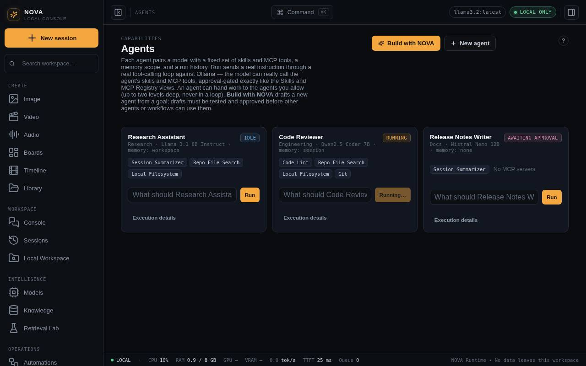
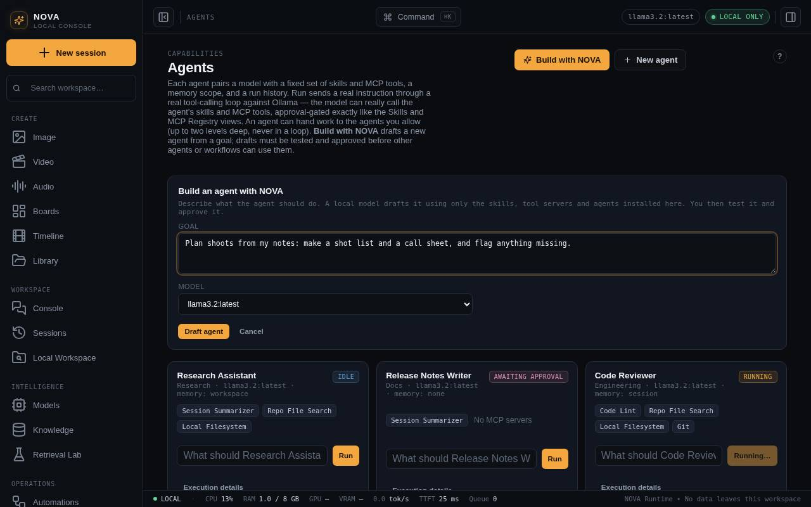

Agents
An agent is a model with instructions and a fixed set of skills and tools. Build one yourself or with Maataa, test it, approve it, and let agents hand work to each other.
An agent is a local model plus instructions, the skills and tool servers it may use, a memory scope, and a run history. Run sends your instruction through a real tool-calling loop against Ollama (up to six rounds): the model can call the agent's skills and tools, approval-gated exactly like the Skills and MCP Registry screens.

Build an agent with Maataa
- Press Build with Maataa and describe the goal in a sentence or two, for example "Turn my shoot notes into a call sheet and translate it to Hindi".
- Pick a local model (7B or larger drafts much better) and press Draft agent.
- Maataa drafts a name, instructions, skills, tool servers and agents to hand work to, choosing only what is installed. Anything else it suggested is dropped and listed in the draft's notes, as are placeholder skills and servers that are not connected. It also writes two or three test prompts.

Test and approve
A new draft is marked Draft.
- Click a test prompt (or write your own) and press Test. Each test is listed with its result.
- Approve becomes available after one successful test.
- Discard deletes a draft you do not want.
Until you approve it, a draft cannot be handed work by another agent or run inside an approved workflow. Check its instructions and tools before approving.
Make an agent yourself
New agent opens a form: name, role, model, memory scope, instructions, skills, tool servers, Can hand work to (approved agents) and Can propose new agents.
Hand-offs between agents
Agents listed under Can hand work to appear to the model as tools. When it uses one, that agent runs with its own model, instructions and tools, and its answer comes back as the tool result.
- Hand-offs go at most two levels deep (set
NOVA_AGENT_MAX_DEPTHfrom 0 to 4), never back to an agent already in the chain, and never to a draft. - Each hand-off is recorded under Hand-offs received on the agent that got it.
- The delegate's own tool calls follow the same approvals.
Can propose new agents gives an agent a tool to draft a new agent when nothing available fits. What it creates is a draft like any other, labelled as proposed by another agent, and nothing can use it until you test and approve it.
Execution details
Execution details on a card shows the last instruction, the answer, how many rounds it took and every tool call with its result, plus the agent's instructions.
Agents that work on their own
The agents on this screen run when you ask them. Maataa also has a multi-agent system for agents that keep working over time, with their own memory, a shared task list, budgets, tool permissions and a supervisor to escalate to. Its agents appear in Workbench → Agents. It is built and tested, but not started from this screen yet. See Built, not yet in the console.